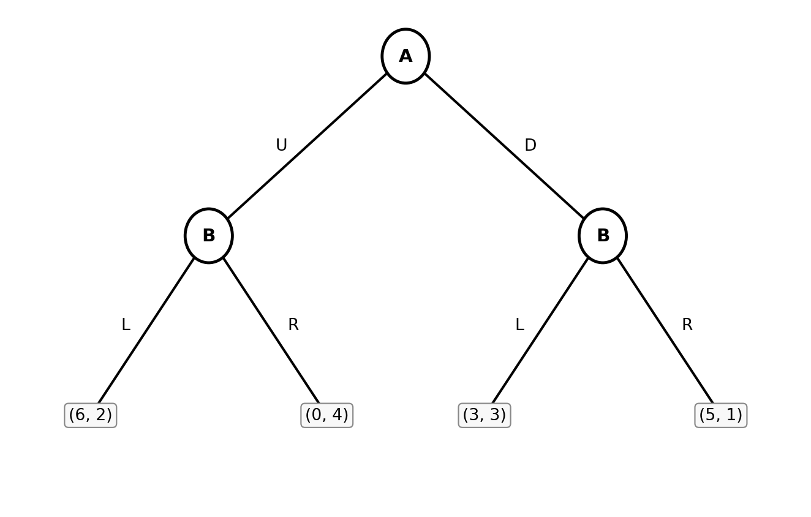

Problem Set 4: Solutions
Econ 502: Advanced Microeconomics
Problem 1: Adverse Selection in the Used Laptop Market
Part (a): Symmetric Information
With observable quality, each type trades in its own market. Gains from trade exist for both types since buyer values exceed seller values:
- High quality: seller value = $600, buyer value = $1,000. Gains from trade = $400 per unit.
- Low quality: seller value = $200, buyer value = $400. Gains from trade = $200 per unit.
In a competitive equilibrium, prices are somewhere between seller and buyer values for each type. Both types trade and all gains from trade are realized.
Part (b): Asymmetric Information with \(\lambda = 0.3\)
A buyer who cannot observe quality values a laptop at its expected worth: \[\bar{V}^B = 0.3 \times 1{,}000 + 0.7 \times 400 = \$580\]
$580 is the highest price buyers are willing to pay. A high-quality seller values their laptop at $600. Since \(\$580 < \$600\), high-quality sellers are not willing to sell. Only low-quality sellers (value $200) are willing to sell at $580.
With only lemons on the market, buyers revise their valuation to $400 (the value of a lemon). So the highest possible equilibrium price is $400. The market for high-quality laptops collapses entirely.
Part (c): Asymmetric Information with \(\lambda = 0.6\)
Expected buyer value: \[\bar{V}^B = 0.6 \times \$1{,}000 + 0.4 \times \$400 = \$760\]
High-quality sellers value their laptops at $600. Since \(\$760 > \$600\), they are willing to sell. Low-quality sellers (value $200) are also willing. Both types sell. The market does not unravel.
Outcome differs from part (b) as now there are enough high-quality laptops that the average price is high enough for high-quality sellers to participate.
Problem 2: Moral Hazard in Unemployment Insurance
Part (a): Expected Utility and Optimal Effort
Expected utility. The worker receives \(b\) in period 1 (always unemployed), \(w\) in period 2 if employed (prob \(e\)), and \(b\) in period 2 if unemployed (prob \(1-e\)). Net of effort cost: \[EU = u(b) + e \cdot u(w) + (1-e) \cdot u(b) - c(e) \]
First-order condition. Maximizing over \(e\): \[\frac{\partial EU}{\partial e} = u(w) -u(b) - c'(e) = 0\] \[c'(e^*) = u(w) - u(b)\]
Interpretation. The worker searches until the marginal cost of effort equals the marginal benefit of finding a job. The right-hand side is the utility gain from moving from unemployment to employment. The larger this gap, the harder the worker searches. (Note: Since \(c\) is convex (\(c'' > 0\)), marginal cost is increasing, so a larger gap implies higher optimal effort \(e^*\).)
Part (b): Effect of Benefits on Effort
Taking the derivative on both sides of the equation \(c'(e^*) = u(w) - u(b)\) with respect to \(b\): \[c''(e^*) \cdot \frac{de^*}{db} = -u'(b) \implies \frac{de^*}{db} = -\frac{u'(b)}{c''(e^*)} < 0\]
since \(u'(b) > 0\) and \(c''(e^*) > 0\).
Intuition. Higher benefits \(b\) raise \(u(b)\): unemployment becomes less painful. This shrinks the utility gain from finding a job, \(u(w) - u(b)\), which is the marginal benefit of search. With a lower marginal benefit, the worker searches less.
Part (c): Explicit Effort Function
With \(u(z) = \sqrt{z}\), \(c(e) = \frac{1}{2}e^2\), and \(w = 9\), the first-order condition \(c'(e^*) = u(w) - u(b)\) becomes: \[e^* = \sqrt{9} - \sqrt{b} = 3 - \sqrt{b}\]
From here, we can see that \(e^* = 0\) when \(\sqrt{b} = 3\), i.e., \(b = 9 = w\). When the UI benefit equals the wage, the worker is indifferent between being employed and unemployed, so the worker exerts zero search effort.
Problem 3: Externalities and Regulatory Policy
Part (a): Private Optimum
The plant maximizes private profit \(\pi(q) = 80q - q^2\): \[\frac{d\pi}{dq} = 80 - 2q = 0 \implies q_{\text{priv}} = 40\]
Private profit: \(\pi(40) = 80(40) - 40^2 = 3{,}200 - 1{,}600 = \$1{,}600\)
Total external cost at \(q = 40\): \(EC(40) = 10 \times 40 = \$400\)
Part (c): Pigouvian Tax
A Pigouvian tax of \(t^*\) per unit of output makes the plant internalize the external cost. The plant solves: \[\max_q \; (80 - t^*)q - q^2 \implies \frac{d\pi}{dq} = 80 - t^* - 2q = 0 \implies t^* = 80 - 2q^*\]
So for \(q^* = 35\), \(t^* = 80 - 2(35) = \$10\). The Pigouvian tax equals the marginal external cost: \(t^* = EC'(q) = 10\).
Part (d): Coase Theorem
Part (i): Farm holds the right to zero pollution.
Starting from \(q = 0\), the plant wants to produce. It must compensate the farm for any pollution damage.
At \(q = 35\): plant profit = \(80(35) - 35^2 = 2{,}800 - 1{,}225 = \$1{,}575\). Farm damage = \(10 \times 35 = \$350\).
The plant will negotiate to produce \(q^* = 35\) and compensate the farm for damages. Both parties gain from this outcome compared to \(q = 0\) (where the plant earns nothing). The plant is willing to pay up to $1,575 (all its profit) to be allowed to produce; the farm requires at least $350 to allow it. The negotiated payment lies in the range \([\$350, \$1{,}575]\).
The efficient output \(q^* = 35\) emerges because it maximizes the joint surplus available to split.
Part (ii): Plant holds the right to pollute freely.
Starting from \(q_{\text{priv}} = 40\): farm damage = $400. Moving from \(q = 40\) to \(q = 35\):
- Plant’s profit loss: \(\pi(40) - \pi(35) = \$1{,}600 - \$1{,}575 = \$25\)
- Farm’s damage savings: \(EC(40) - EC(35) = \$400 - \$350 = \$50\)
Gains from trade = \(\$50 - \$25 = \$25 > 0\). The farm can pay the plant to reduce output. The farm is willing to pay up to $50; the plant requires at least $25. The negotiated payment lies in \([\$25, \$50]\), and output falls to \(q^* = 35\).
Part (iii): Comparison.
In both cases, the efficient output \(q^* = 35\) emerges. This confirms the Coase theorem: when property rights are well-defined and bargaining is costless, the parties negotiate the efficient outcome regardless of who holds the rights.
What differs is distribution: when the farm holds rights, the plant pays the farm (between $350 and $1,575). When the plant holds rights, the farm pays the plant (between $25 and $50). The assignment of rights determines who captures the gains from trade but not the total amount of trade.
Problem 4: Public Goods and Free Riding
Part (a): Best Response Function
Roommate \(i\) solves: \[\max_{g_i} \; U_i = (Y_i - g_i)(g_i + g_j)\]
Taking the first-order condition: \[\frac{\partial U_i}{\partial g_i} = -(g_i + g_j) + (Y_i - g_i) = 0\] \[Y_i - 2g_i - g_j = 0\]
\[\boxed{g_i^*(g_j) = \frac{Y_i - g_j}{2}}\]
The best response is decreasing in \(g_j\): the more the other roommate contributes, the less roommate \(i\) wants to contribute. Each dollar the other contributes reduces \(i\)’s best response by \(\$0.50\). This is the free-rider motive: \(i\) benefits from \(j\)’s contribution without paying for it, so \(i\) reduces their own contribution in response.
Part (b): Nash Equilibrium
Solving the two best-response functions simultaneously with \(Y_1 = 120\), \(Y_2 = 180\): \[g_1 = \frac{120 - g_2}{2}, \qquad g_2 = \frac{180 - g_1}{2}\]
Substituting the second into the first: \[g_1 = \frac{120 - \frac{180 - g_1}{2}}{2} \implies 4g_1 = 240 - 180 + g_1 \implies 3g_1 = 60 \implies g_1^* = 20\] \[g_2^* = \frac{180 - 20}{2} = 80\]
\[G^* = 20 + 80 = 100, \qquad x_1^* = 120 - 20 = 100, \qquad x_2^* = 180 - 80 = 100\] \[U_1^* = 100 \times 100 = 10{,}000, \qquad U_2^* = 100 \times 100 = 10{,}000\]
Surprising feature. Despite earning very different incomes (\(Y_1 = 120\) vs. \(Y_2 = 180\)), both roommates end up with the same private consumption (\(x_1^* = x_2^* = 100\)) and the same utility. The richer roommate contributes four times as much to the public good (\(g_2^* = 80\) vs. \(g_1^* = 20\)). This equalization of private consumption is a property of the Nash equilibrium with \(U_i = x_i G\): each roommate’s optimal private consumption equals \(G^*\) (i.e., \(x_i^* = G^* = (Y_1+Y_2)/3\)), regardless of individual income.
Part (d): Efficient Allocation and Comparison
With equal private consumption (\(x_1^{**} = x_2^{**} = X^{**}/2 = 75\)): \[g_1^{**} = Y_1 - x_1^{**} = 120 - 75 = 45, \qquad g_2^{**} = Y_2 - x_2^{**} = 180 - 75 = 105\] \[U_1^{**} = 75 \times 150 = 11{,}250, \qquad U_2^{**} = 75 \times 150 = 11{,}250\]
| Nash Equilibrium | Social Optimum | |
|---|---|---|
| Roommate 1 contribution \(g_1\) | 20 | 45 |
| Roommate 2 contribution \(g_2\) | 80 | 105 |
| Total public good \(G\) | 100 | 150 |
| Private consumption \(x_i\) | 100 (both) | 75 (both) |
| Utility \(U_i\) | 10,000 (both) | 11,250 (both) |
The Nash equilibrium public good (\(G^* = 100\)) is only \(\frac{2}{3}\) of the efficient level (\(G^{**} = 150\)): decentralized provision falls 33% short. Both roommates are worse off under free riding. Each earns utility 10,000 in the Nash equilibrium versus 11,250 at the social optimum. The loss is borne equally because the Nash equilibrium happens to equalize utilities across the two roommates, and the planner’s equal-split allocation does so as well.
Part (e): Optimal Subsidy Rate
With subsidy rate \(s\), the effective budget constraint becomes \(x_i + (1-s)g_i = Y_i\). Roommate \(i\) maximizes \((Y_i - (1-s)g_i)(g_i + g_j)\):
\[\frac{\partial U_i}{\partial g_i} = -(1-s)(g_i+g_j) + (Y_i-(1-s)g_i) = 0 \implies g_i^*(g_j) = \frac{Y_i}{2(1-s)} - \frac{g_j}{2}\]
Solving the Nash equilibrium with subsidy (using the same method as part (b)): \[g_1^*(s) = \frac{2Y_1 - Y_2}{3(1-s)} = \frac{60}{3(1-s)} = \frac{20}{1-s}, \qquad g_2^*(s) = \frac{2Y_2 - Y_1}{3(1-s)} = \frac{240}{3(1-s)} = \frac{80}{1-s}\]
\[G^*(s) = g_1^*(s) + g_2^*(s) = \frac{100}{1-s}\]
Setting \(G^*(s^*) = G^{**} = 150\): \[\frac{100}{1-s^*} = 150 \implies 1-s^* = \frac{2}{3} \implies s^* = \frac{1}{3}\]
A subsidy rate of \(s^* = 1/3\) induces the efficient total public good.
Problem 5: Game Theory
Part (a): Dominant and Dominated Strategies
The payoff matrix:
| L | R | |
|---|---|---|
| U | (6, 2) | (0, 4) |
| D | (3, 3) | (5, 1) |
Player A’s strategies. Compare U and D for each of B’s strategies:
- If B plays L: A gets 6 (U) vs. 3 (D). A prefers U.
- If B plays R: A gets 0 (U) vs. 5 (D). A prefers D.
Neither U nor D dominates the other for A. No dominant strategy for A.
Player B’s strategies. Compare L and R for each of A’s strategies:
- If A plays U: B gets 2 (L) vs. 4 (R). B prefers R.
- If A plays D: B gets 3 (L) vs. 1 (R). B prefers L.
Neither L nor R dominates the other for B. No dominant strategy for B.
Conclusion. There are no strictly dominant or strictly dominated strategies. The game cannot be reduced by iterated elimination.
Part (b): Pure-Strategy Nash Equilibria
A Nash equilibrium requires each player to be best-responding to the other.
Check each cell:
- (U, L): A’s BR to L is U (\(6 > 3\)). B’s BR to U is R (\(4 > 2\)). B is not best-responding. Not a NE.
- (U, R): A’s BR to R is D (\(5 > 0\)). A is not best-responding. Not a NE.
- (D, L): A’s BR to L is U (\(6 > 3\)). A is not best-responding. Not a NE.
- (D, R): A’s BR to R is D (\(5 > 0\)). B’s BR to D is L (\(3 > 1\)). B is not best-responding. Not a NE.
No pure-strategy Nash equilibrium exists. This game has a cyclical best-response structure: A wants to match B’s strategy (play U when B plays L, play D when B plays R), while B wants to mismatch (play R when A plays U, play L when A plays D). This is analogous to Matching Pennies.
Part (c): Mixed-Strategy Nash Equilibrium
Let \(p = P(\text{A plays U})\) and \(q = P(\text{B plays L})\).
Finding \(p^*\) (make B indifferent).
B’s expected payoff from L: \(2p + 3(1-p) = 3 - p\)
B’s expected payoff from R: \(4p + 1(1-p) = 1 + 3p\)
Setting equal: \[3 - p = 1 + 3p \implies 2 = 4p \implies p^* = \frac{1}{2}\]
Finding \(q^*\) (make A indifferent).
A’s expected payoff from U: \(6q + 0(1-q) = 6q\)
A’s expected payoff from D: \(3q + 5(1-q) = 5 - 2q\)
Setting equal: \[6q = 5 - 2q \implies 8q = 5 \implies q^* = \frac{5}{8}\]
Mixed-strategy Nash equilibrium: A plays U with probability \(p^* = 1/2\); B plays L with probability \(q^* = 5/8\).
Expected payoffs.
Player A’s expected payoff (use either pure strategy at equilibrium, since A is indifferent): \[EU_A = 6 \times \frac{5}{8} + 0 \times \frac{3}{8} = \frac{30}{8} = \frac{15}{4} = 3.75\]
Player B’s expected payoff: \[EU_B = 2 \times \frac{1}{2} + 3 \times \frac{1}{2} = 2.5 \quad \text{(using A's mix and either of B's strategies)}\]
Part (d): Subgame Perfect Equilibrium (Sequential Game)
Backward induction.
Step 1: B’s optimal responses (bottom of the tree).
- After U: B chooses L (payoff 2) or R (payoff 4). B plays R.
- After D: B chooses L (payoff 3) or R (payoff 1). B plays L.
Step 2: A anticipates B’s responses and chooses at the top.
- Play U → B responds R → A gets 0.
- Play D → B responds L → A gets 3.
A prefers D (\(3 > 0\)), so A plays D.
Subgame perfect equilibrium: A plays D; B’s strategy is (R after U, L after D). The equilibrium outcome is (D, L) with payoffs (A: 3, B: 3).
Part (e): First-Mover Advantage?
| Setting | A’s payoff | B’s payoff |
|---|---|---|
| Mixed-strategy NE (simultaneous) | 3.75 | 2.5 |
| SPE (A moves first) | 3 | 3 |
Moving first is a disadvantage for A. By committing to D, A reveals its strategy, allowing B to exploit it with L and holding A to a payoff of 3. In the simultaneous game, B faces uncertainty about A’s move, which works in A’s favor. A’s expected payoff is 3.75 > 3. Commitment hurts A here because B’s best responses are “adversarial”: whichever action A commits to, B has a response that limits A’s payoff (R after U gives A zero; L after D gives A only 3). Neither commitment is beneficial for A, so revealing a move first strictly reduces A’s payoff.